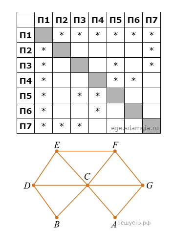

| 1 | Прибор автоматической фиксации нарушений правил дорожного поведения делает цветные фотографии размером 1024 × 768 пикселей, используя палитру из 4096 цветов. Для передачи снимки группируются в пакеты по 256 штук. Определите размер одного пакета фотографий в Мбайт. В ответе запишите только число. | |||
| 1. 288 | 2. 345 | 3. 255 | 4. 290 | |
| 2 |
На рисунке схема дорог Н-ского района изображена в виде графа. В таблице звёздочкой обозначено наличие дороги из одного населенного пункта в другой. Отсутствие звёздочки означает, что такой дороги нет.
 Каждому населённому пункту на схеме соответствует номер в таблице, но неизвестно, какой именно номер. Определите, какие номера в таблице могут соответствовать населённым пунктам E и F на схеме. В ответе запишите эти два номера в возрастающем порядке без пробелов и знаков препинания. |
|||
| 1. 45 | 2. 35 | 3. 25 | 4. 30 | |
| 3 | Сколько существует восьмеричных пятизначных чисел, не содержащих в своей записи цифру 1, в которых все цифры различны и никакие две чётные или две нечётные цифры не стоят рядом? | |||
| 1. 150 | 2. 145 | 3. 180 | 4. 230 | |
| 4 | В терминологии TCP/IP маской сети называют двоичное число, которое показывает, какая часть IP-адреса узла сети относится к адресу сети, а какая — к адресу узла в этой сети. Адрес сети получается в результате применения поразрядной конъюнкции к заданному адресу узла и маске сети. Сеть задана IP-адресом 192.168.32.160 и маской сети 255.255.255.240. Сколько в этой сети IP-адресов, для которых сумма единиц в двоичной записи IP-адреса чётна? В ответе укажите только число. | |||
| 1. 8 | 2. 10 | 3. 6 | 4. 4 | |
| 5 | На вход алгоритма подаётся натуральное число N. Алгоритм строит по нему новое число следующим образом. 1. Строится двоичная запись числа N. 2. К этой записи дописываются справа ещё два разряда по следующему правилу: если N чётное, в конец числа (справа) дописываются два нуля, в противном случае справа дописываются две единицы. Например, двоичная запись 1001 числа 9 будет преобразована в 100111. Полученная таким образом запись (в ней на два разряда больше, чем в записи исходного числа N) является двоичной записью числа — результата работы данного алгоритма. Укажите максимальное число N, для которого результат работы алгоритма будет меньше 134. В ответе это число запишите в десятичной системе счисления. | |||
| 1. 30 | 2. 32 | 3. 34 | 4. 28 | |
| 6 | С помощью текстового редактора определите, сколько раз в тексте книги А. И. Куприна «Гранатовый браслет», встречается слово «мой» или «Мой». Учитываются только те слова, которые входят в состав другого слова, но не как самостоятельное слово. В ответе укажите только число. | |||
| 1. 10 | 2. 12 | 3. 14 | 4. 16 | |
Разработччик: Бокарев Матвей